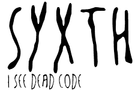

By Objective Solutions and contributors
After a text editor, a compiler and a code structure viewer, a dead code detector is the first thing we want. Syxth is the dead code detector for Eclipse.
Syxth requires Eclipse 3.1 or newer running on Java 5 or newer.
Update site: http://syxth.org/updatesite/
Once installed, right-click on any project, source package or class > Search for dead code
Feel free to contact us on the discussion group.
The Syxth Team